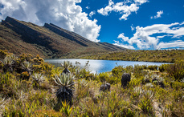

Hola "Tizy"
Bienvenido! Este es tu espacio, aquí encontraras diversa información propia de nuestro entorno natural, algunas palabras de la lengua indígena… podrás expresarte, compartir momentos, fotografías, comentarios, conocimiento, ¡lo que quieras!, solo recuerda cada ser humano es diferente, no todos piensan igual que tú, esa es nuestra esencia, te pido que…
- No agredas a tu soque
- No juzgues o limites el pensamiento de tu soque
- No publiques contenido sensible
Te invito a que seamos tolerantes, respetuosos y amables: Disfrutemos juntos de este espacio
…Sabias que…
Gracias a la conciencia ambiental que la población indígena mantiene como cultura y su estilo de vida sostenible el porcentaje de biodiversidad en sus asentamientos es alto; ayudan a preservar estos ambientes y promulgan la importancia de la Myusquyn o madre tierra como fuente de vida, centro del universo y medio de conexión con nuestro pasado, presente y futuro- Tizy Amigo
- Soque Prójimo
- Myusquyn Naturaleza


- 